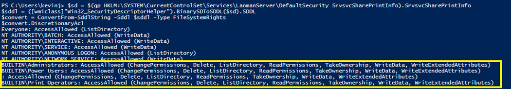

Summary:
By default, members of Power Users and Print Operators should be able to bypass Share permissions and enumerate shares on a Windows Server. Although uncommon, it is possible to modify the default permissions to enumerate shares, which could lead to Power Users or Print Operators not having the ability to enumerate the shares and their contents.
Submitted by:
Kevin Joyce
Product(s):
StealthAUDIT
Affected Versions:
All
Affected Module:
SA - DC - File
SA - DC - FSAA - DFS
SA - DC - FSAA - Permissions
SA - DC - FSAA - Sensitive Data
Dev Ticket:
N/A
Resolved in Version:
N/A
Issue:
When using the StealthAUDIT File System solution to scan contents on a Windows Server, you get an access denied enumerating shares although the service account has been granted Power Users membership (or higher). The warning you’ll receive would be:
"Access denied scanning [UNCSharePath]"
Instructions:
The script provided below allows you to query the current permissions stored in the registry for who has access to various functions related to shares.
$sd = $(gp HKLM:\SYSTEM\CurrentControlSet\Services\LanmanServer\DefaultSecurity SrvsvcSharePrintInfo).SrvsvcSharePrintInfo
$sddl = ([wmiclass]"Win32_SecurityDescriptorHelper").BinarySDToSDDL($sd).SDDL
$convert = ConvertFrom-SddlString -Sddl $sddl -Type FileSystemRights
$convert.DiscretionaryAcl
The results of this query should look like the below:

You can see the results for Administrators, Power Users and Print Operators all contain the same values.
Stealthbits does not recommend changing these settings from the OS default. If encountered in a production environment, best efforts should be undertaken to understand why the changes were implemented and whether & how they should be reverted by the end user. In the instance you do not wish to change these values, you can leverage one of the existing groups that does contain the set of permissions.